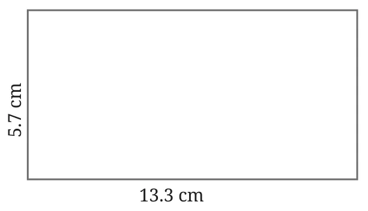
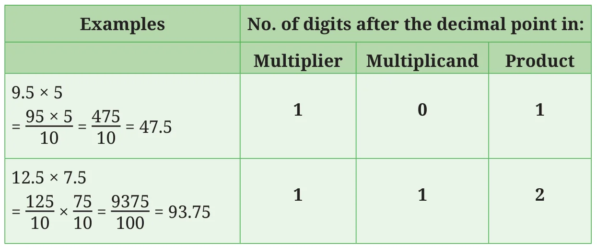
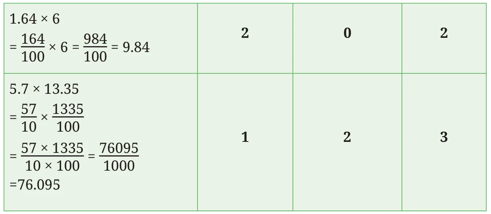
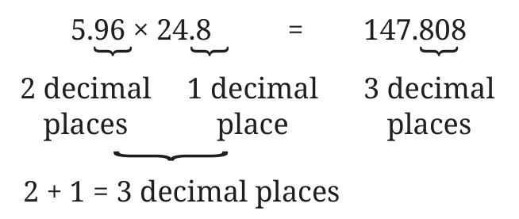
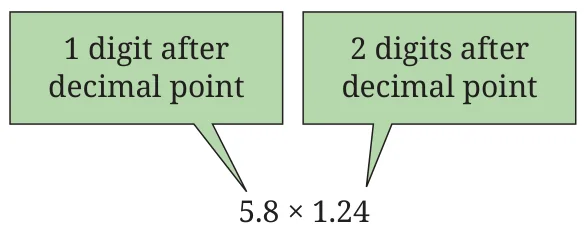

Example 1: Arshad goes to a stationery shop and purchases 5 pens. If one pen costs ₹9.5 (9 rupees and 50 paisa), how much should he pay the shopkeeper?
What operation must we use here? We have to multiply 9.5 by 5, which is the same as adding 9.5, 5 times.
That is \(9.5 \times 5 = 9.5 + 9.5 + 9.5 + 9.5 + 9.5 = 47.5\).
We can also directly multiply the numbers by converting them into fractions.
9.5 is \(\frac{95}{10}\) and 5 is \(\frac{5}{1}\) as a fraction.
The cost of 5 pens \(= \frac{5}{1} \times \frac{95}{10}\).
Recall that, to find the product of two fractions, we multiply the numerators and multiply the denominators.
\(\frac{5}{1} \times \frac{95}{10} = \frac{5 \times 95}{1 \times 10} = \frac{475}{10} = 47.5\).
The cost of 5 pens is ₹47.5.
Example 2: A car travels 12.5 km per litre of petrol. What is the distance covered with 7.5 litres of petrol?
We have to multiply 12.5 by 7.5.
The distance covered \(= 12.5 \times 7.5\)
\(= \frac{125}{10} \times \frac{75}{10} = \frac{125 \times 75}{10 \times 10} = \frac{9375}{100} = 93.75\)
The distance covered is 93.75 km.
Can the product of two decimals be a natural number?
Can the product of a decimal and a natural number be a natural number?
Example 3: The distance between Ajay's school and his home is 827 m. He walks to school in the morning and then walks back home in the evening, 6 days a week. How much does he walk in a week? Answer in kilometres.
Each way between school and home, Ajay walks 827 metres, i.e., 0.827 km. So, in a day he walks,
\(0.827 \times 2 = \frac{827}{1000} \times 2 = \frac{827 \times 2}{1000} = \frac{1654}{1000} = 1.654\)
He goes to school 6 days a week. So, in a week, he walks
\(1.654 \times 6 = \frac{1654}{1000} \times 6 = \frac{1654 \times 6}{1000} = \frac{9924}{1000} = 9.924\)
Ajay walks 9.924 km a week.
Example 4: Find the area of the given rectangle.

Area of the rectangle =
\(5.7 \times 13.3 = \frac{57}{10} \times \frac{133}{10} = \frac{7581}{100} = 75.81\)
The area is 75.81 sq cm.
Observe the number of digits after the decimal point in the multiplier, the multiplicand and the product. Also note the number of zeroes in the denominator.


Suppose we know that \(596 \times 248 = 147808\), can you immediately write down the product of \(5.96 \times 24.8\)?
By looking at the above examples, can you frame a rule to multiply two decimals?
Multiplication of decimals is the same as the multiplication of their corresponding fractions. When multiplying fractions, we multiply the numerators and denominators, respectively.
The product of the numerators = Product of the numbers with the decimal points removed.
Since both the denominators are of the form 1, 10, 100, 1000, … , the product of the denominators is also of the form 1 followed by zeroes. The number of zeroes in the product is the sum of the number of zeroes in each denominator.
In the product, the decimal point is placed based on the total number of zeroes in the denominator.
So, to multiply two decimals, we can multiply the two numbers obtained by removing the decimal point, and then place the decimal point appropriately as shown below.
To evaluate \(5.96 \times 24.8\):
\(596 \times 248 = 147808\)

Example 5: Let us use the above rule to find the product of 5.8 and 1.24.
Let us first multiply 58 and 124.
The product is 7192.
The sum of the number of digits after the decimal point in the multiplier and multiplicand is 3. So, the product is 7.192.
Verify this by converting the multiplier and multiplicand into fractions.
